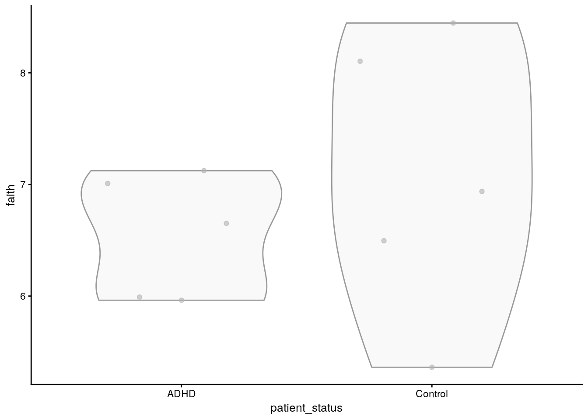

26 Introductory
Version: 2.1
 French
French  Dutch
Dutch 26.1 Introduction
Hello and welcome to a comprehensive workflow using the latest R/Bioconductor tools for microbiome data science. In this tutorial, we‚Äôll guide you through the foundational steps of microbiome analysis using miaverse. These steps are applicable to almost any of your projects and will help you understand the fundamental concepts that will skyrocket üöÄ your future microbiome analyses.
In this workflow, we cover basics of:
- Data wrangling and transformations
- Exploration
- Alpha and beta diversity26.2 Load packages
To begin, we need to load the necessary packages. The following script ensures that all required packages are loaded and installed if they aren’t already.
# List of packages that we need
packages <- c("mia", "miaViz", "scater")
# Get packages that are already installed
packages_already_installed <- packages[ packages %in% installed.packages() ]
# Get packages that need to be installed
packages_need_to_install <- setdiff( packages, packages_already_installed )
# Loads BiocManager into the session. Install it if it is not already installed.
if( !require("BiocManager") ){
install.packages("BiocManager")
library("BiocManager")
}
# If there are packages that need to be installed, installs them with BiocManager
# Updates old packages.
if( length(packages_need_to_install) > 0 ) {
install(packages_need_to_install, ask = FALSE)
}
# Load all packages into session. Stop if there are packages that were not
# successfully loaded
pkgs_not_loaded <- !sapply(packages, require, character.only = TRUE)
pkgs_not_loaded <- names(pkgs_not_loaded)[ pkgs_not_loaded ]
if( length(pkgs_not_loaded) > 0 ){
stop(
"Error in loading the following packages into the session: '",
paste0(pkgs_not_loaded, collapse = "', '"), "'")
}26.3 Importing data
The next step involves importing your data into the R environment. Depending on the bioinformatics tools used in the upstream section of the workflow, importing the data may vary slightly. We cover the most widely used formats, with importers available for convenience. You can also build a TreeSummarizedExperiment (TreeSE) from scratch from basic text files. For more information, see Section 4.1.
For this demonstration, you can either use your own data or one of the built-in datasets provided by mia, which you can find here: Section 4.2.
In this tutorial, we’ll be using the C Tengeler et al. (2020) dataset. In the study, they explored the impact of altered microbiomes on brain structure, specifically comparing patients with ADHD (Attention Deficit Hyperactivity Disorder) to controls (see more information on this dataset from here). Let’s load this dataset into our R environment:
data("Tengeler2020", package = "mia")
tse <- Tengeler202026.4 Subsetting and accessing the data
Once loaded, we often need to wrangle and preprocess the data. The TreeSE object, a primary data container in the miaverse framework, is designed to handle complex microbiome data effectively. For more details about the TreeSE and other data containers, see Chapter 3.
26.4.1 Subsetting
In many cases, you may need to work with only a portion of your original TreeSE for various reasons. Subsetting the TreeSE object is as straightforward as manipulating a basic matrix in R, utilizing rows and columns. For example, using the Tengeler2020 dataset, we can focus on a specific cohort. Here’s how:
This will create a TreeSE object only containing samples of the second cohort. You can find more information on subsetting from here Section 3.1.
26.4.2 Accessing data
You can also access different types of data stored within the TreeSE object. Here’s a quick reminder on how to access certain types of data:
You can access the abundance table, or assays, as follows. In this example, we specify that we want to fetch an abundance table named “counts”. For more details, see Section 3.2.
assay(tse, "counts") |> head()
## A21 A23 A25 A28 A29 A210 A22 A24 A26 A27
## Bacteroides 1740 1791 2368 1316 252 4052 1838 3085 1570 3621
## Bacteroides_1 540 229 0 0 0 1762 0 2190 0 1480
## Parabacteroides 145 0 109 119 31 0 5415 0 3531 0
## Bacteroides_2 659 0 588 542 141 0 796 84 135 293
## Akkermansia 84 700 440 244 25 2456 976 316 2420 1129
## Bacteroides_3 610 0 522 511 352 0 0 70 0 322Sample (or column) metadata is stored in colData. In this example, it includes the diagnoses of the patients from whom the samples were drawn. See for more info on colData from Section 6.3.
colData(tse)
## DataFrame with 10 rows and 4 columns
## patient_status cohort patient_status_vs_cohort sample_name
## <character> <character> <character> <character>
## A21 ADHD Cohort_2 ADHD_Cohort_2 A21
## A23 ADHD Cohort_2 ADHD_Cohort_2 A23
## A25 ADHD Cohort_2 ADHD_Cohort_2 A25
## A28 ADHD Cohort_2 ADHD_Cohort_2 A28
## A29 ADHD Cohort_2 ADHD_Cohort_2 A29
## A210 Control Cohort_2 Control_Cohort_2 A210
## A22 Control Cohort_2 Control_Cohort_2 A22
## A24 Control Cohort_2 Control_Cohort_2 A24
## A26 Control Cohort_2 Control_Cohort_2 A26
## A27 Control Cohort_2 Control_Cohort_2 A27rowData contains data on feature characteristics, particularly taxonomic information (see Section 3.4).
rd <- rowData(tse)
rd
## DataFrame with 151 rows and 6 columns
## Kingdom Phylum
## <character> <character>
## Bacteroides Bacteria Bacteroidetes
## Bacteroides_1 Bacteria Bacteroidetes
## Parabacteroides Bacteria Bacteroidetes
## Bacteroides_2 Bacteria Bacteroidetes
## Akkermansia Bacteria Verrucomicrobia
## ... ... ...
## Unidentified_Gastranaerophilales Bacteria Cyanobacteria
## Halomonas Bacteria Proteobacteria
## Lachnoclostridium_4 Bacteria Firmicutes
## Parabacteroides_8 Bacteria Bacteroidetes
## Unidentified_Lachnospiraceae_14 Bacteria Firmicutes
## Class Order
## <character> <character>
## Bacteroides Bacteroidia Bacteroidales
## Bacteroides_1 Bacteroidia Bacteroidales
## Parabacteroides Bacteroidia Bacteroidales
## Bacteroides_2 Bacteroidia Bacteroidales
## Akkermansia Verrucomicrobiae Verrucomicrobiales
## ... ... ...
## Unidentified_Gastranaerophilales Melainabacteria Gastranaerophilales
## Halomonas Gammaproteobacteria Oceanospirillales
## Lachnoclostridium_4 Clostridia Clostridiales
## Parabacteroides_8 Bacteroidia Bacteroidales
## Unidentified_Lachnospiraceae_14 Clostridia Clostridiales
## Family Genus
## <character> <character>
## Bacteroides Bacteroidaceae Bacteroides
## Bacteroides_1 Bacteroidaceae Bacteroides
## Parabacteroides Porphyromonadaceae Parabacteroides
## Bacteroides_2 Bacteroidaceae Bacteroides
## Akkermansia Verrucomicrobiaceae Akkermansia
## ... ... ...
## Unidentified_Gastranaerophilales
## Halomonas Halomonadaceae Halomonas
## Lachnoclostridium_4 Lachnospiraceae Lachnoclostridium
## Parabacteroides_8 Porphyromonadaceae Parabacteroides
## Unidentified_Lachnospiraceae_14 Lachnospiraceae unculturedHere rowData(tse) returns a DataFrame with 151 rows and 7 columns. Each row represents an organism and each column a taxonomic level.
26.5 Data wrangling
26.5.1 Agglomerating data
Agglomerating your data to a specific taxonomic rank helps simplify the analysis and reveal broader patterns. By grouping taxa at a chosen level, such as Phylum, you can better understand general trends and distributions. The agglomerateByRank() function streamlines this process, making it easier to analyze and visualize data at a higher level of aggregation.
tse_phylum <- agglomerateByRank(tse, rank = "Phylum")
# Check
tse_phylum
## class: TreeSummarizedExperiment
## dim: 5 10
## metadata(1): agglomerated_by_rank
## assays(1): counts
## rownames(5): Bacteroidetes Cyanobacteria Firmicutes Proteobacteria
## Verrucomicrobia
## rowData names(6): Kingdom Phylum ... Family Genus
## colnames(10): A21 A23 ... A26 A27
## colData names(4): patient_status cohort patient_status_vs_cohort
## sample_name
## reducedDimNames(0):
## mainExpName: NULL
## altExpNames(0):
## rowLinks: a LinkDataFrame (5 rows)
## rowTree: 1 phylo tree(s) (151 leaves)
## colLinks: NULL
## colTree: NULLGreat! Now, our data is aggregated to the taxonomic information up to the Phylum level, allowing the analysis to be focused on this specific rank.
26.5.2 Transformation
The mia package provides an easy way to calculate the relative abundances for our TreeSE using the transformAssay() method.
tse <- transformAssay(tse, method = "relabundance")
tse_phylum <- transformAssay(tse_phylum, method = "relabundance")This function takes the original counts assay and calculates the relative abundances, storing the newly computed matrix back into the TreeSE. You can access it in the assays of the TreeSE by specifying the name of the relative abundance assay (e.g., “relabundance”):
assay(tse, "relabundance") |> head()
## A21 A23 A25 A28 A29 A210 A22
## Bacteroides 0.27397 0.32796 0.21594 0.19379 0.14221 0.22023 0.09614
## Bacteroides_1 0.08503 0.04193 0.00000 0.00000 0.00000 0.09577 0.00000
## Parabacteroides 0.02283 0.00000 0.00994 0.01752 0.01749 0.00000 0.28324
## Bacteroides_2 0.10376 0.00000 0.05362 0.07981 0.07957 0.00000 0.04164
## Akkermansia 0.01323 0.12818 0.04012 0.03593 0.01411 0.13349 0.05105
## Bacteroides_3 0.09605 0.00000 0.04760 0.07525 0.19865 0.00000 0.00000
## A24 A26 A27
## Bacteroides 0.375716 0.076844 0.24740
## Bacteroides_1 0.266715 0.000000 0.10112
## Parabacteroides 0.000000 0.172826 0.00000
## Bacteroides_2 0.010230 0.006608 0.02002
## Akkermansia 0.038485 0.118447 0.07714
## Bacteroides_3 0.008525 0.000000 0.02200For more information on the capabilities and transformation options of mia::transformAssay(), see Chapter 7.
26.6 Community composition
A common way to summarize composition is to use a bar plot to display relative abundances. See Chapter 11 for more details on composition summaries. This approach visualizes the relative abundances of selected taxa in each sample, providing a quick overview of common compositions and major changes across samples. Here, we choose to plot all the phyla found in the samples.
p <- plotAbundance(tse_phylum, assay.type = "relabundance")
pAs we can see, Bacteroidetes is a common phylum in all samples. When its abundance drops below 50%, Firmicutes notably increases to fill the space.
26.7 Community diversity
Community diversity measures in microbiology can be categorized into three groups:
- Richness: The total number of taxa.
- Equitability: How evenly the abundances of taxa are distributed.
- Diversity: A combination of taxa richness and equitability.Diversity can vary in association with different phenotypes. Next, we will calculate Faith’s phylogenetic diversity index. What sets this index apart is its incorporation of phylogeny into the diversity calculation. This index considers both the number and the relatedness of different taxa, using branch lengths on a phylogenetic tree. For more information on diversity, see Chapter 12.
# Estimate Faith's index
tse <- addAlpha(tse, index = "faith")The results are stored to colData. The calculated index shows how diverse each sample is in terms of the number of different microbes present. We can then create a graph to visualize this.
p <- plotColData(tse, x = "patient_status", y = "faith")
p
The graph shows that there is no significant difference in microbial diversity between the ADHD and control groups. However, alpha diversity metrics like Faith’s index only tell us about the diversity within individual samples and do not account for the differences between samples or groups. To understand how microbial communities vary between different samples — for instance, between ADHD patients and controls — we need to examine beta diversity.
26.8 Community dissimilarity
To gain a more comprehensive understanding of microbial variation across different samples, we assess beta diversity by measuring the dissimilarities in microbial compositions between samples. Beta diversity helps us determine how distinct or similar the microbiomes are among groups, allowing us to identify patterns or differences in microbial communities that may not be apparent from alpha diversity alone.
To explore these dissimilarities, we use Principal Coordinate Analysis (PCoA), a technique that reduces the complexity of high-dimensional data by projecting it into a lower-dimensional space while preserving the dissimilarities (or distances) between samples. This enables us to visualize the relationships and differences between samples in a simplified manner. For more information, refer to Chapter 13.
In this analysis, we use UniFrac dissimilarity, which takes into account the phylogenetic relationships among taxa. UniFrac measures the phylogenetic distance between microbial communities by comparing the branch lengths shared by the communities on a phylogenetic tree. This provides a more nuanced understanding of community differences by incorporating evolutionary relationships.
# Run PCoA
tse <- runMDS(
tse,
FUN = getDissimilarity,
tree = rowTree(tse),
method = "unifrac",
assay.type = "counts",
niter = 100
)The results are stored in reducedDim slot. In order to visualize this newly generated projection, we can apply scater::plotReducedDim().
# Create a ggplot object
p <- plotReducedDim(
tse, "MDS",
colour_by = "patient_status",
point_size = 3
)
p <- p + labs(title = "Principal Coordinate Analysis")
pThe plot shows that the data clusters into three groups, with two of them consisting solely of one diagnosis or another. This suggests that the microbial profiles differ between ADHD patients and controls.
To further explore the factors driving these differences in microbial profiles, we can perform a differential abundance analysis, for instance (see Chapter 15).